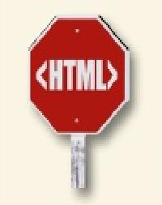
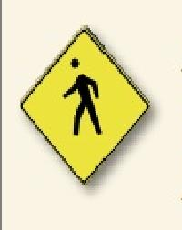

| |
sempre si comincia col doctype.
sempre si comincia ogni pagina con un doctype.Questo ti
permettera di partire col piede giusto su tutti i browser e
anche con il validitor. |
Usa doctype html ogni volta,tutte le volte a meno che non si scriva in HTML 4.01 o XHTML.
|  |
L'elemento html: Non uscire di casa senza di essa.
Dopo il doctype, l'elemento HTML deve essere sempre la parte superiore, o radice, elemento della tua pagina web. Cosi, dopo il doctype, il tag html comincera la tua pagina e il tag html dovrebbe finirla, con tutto il resto della tua pagina nidificato all'interno |
|  |
Ricordatevi di usare sia la vostra testa e il vostro corpo per un migliore HTML.
Solo gli elementi della testa e del corpo possono andare direttamente all'interno del vostro elemento html. Cio significa che ogni altro elemento deve andare sia all'interno della testa o l'elemento del corpo. Nessun eccezioni! |
| |
Feed si usa per testare la codifica dei caratteri a destra.
Includere un meta charset = UTF-8 tag nella tua testa. Il browser vi ringraziers, e cosi anche gli utenti quando stanno leggendo commenti sul tuo blog da parte degli utenti di tutto il mondo |